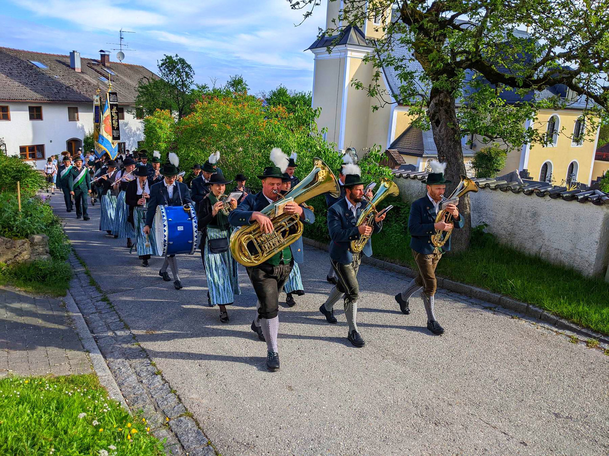
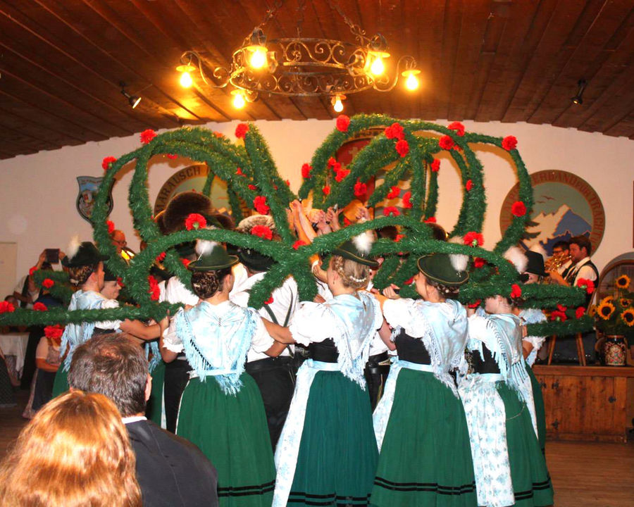
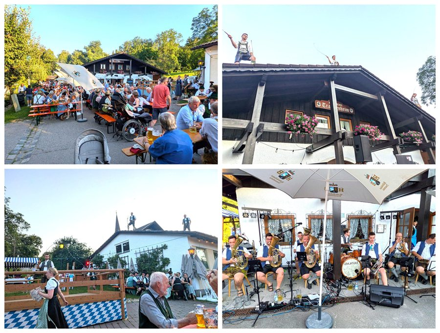
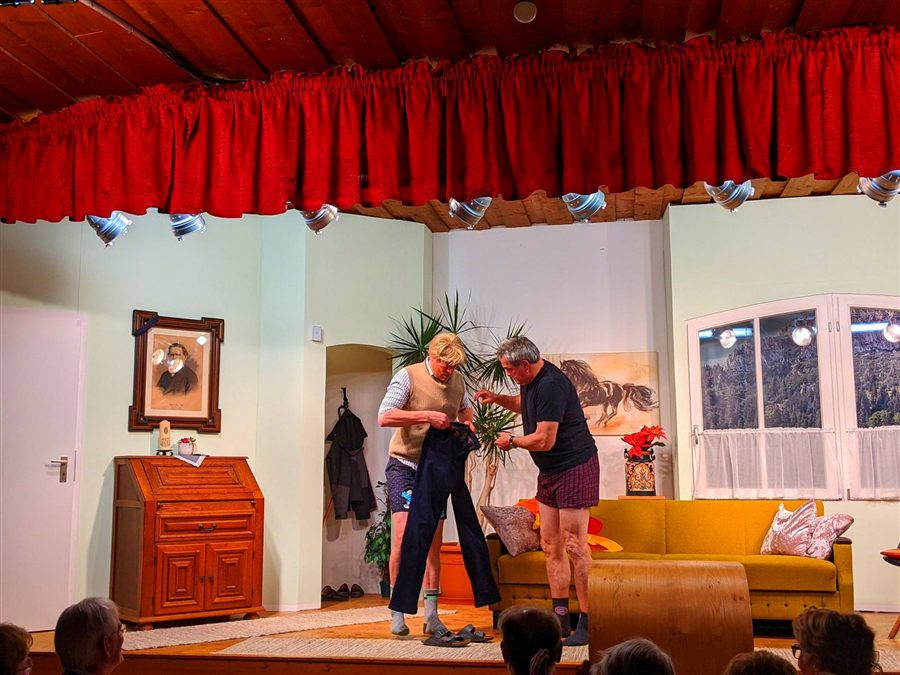
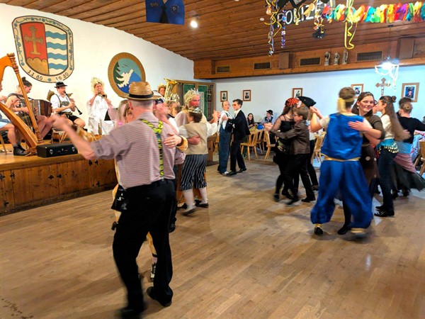
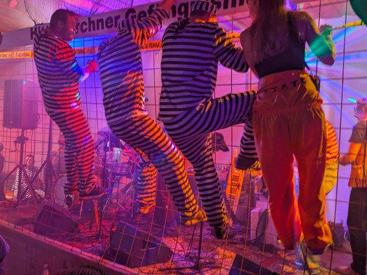
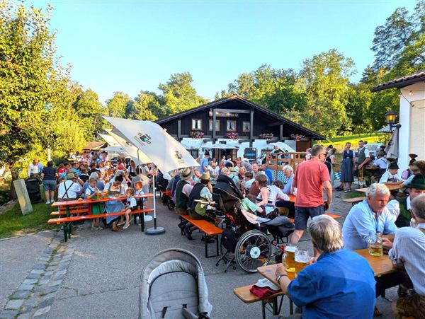

Trachtenverein Hittenkirchen
GTEV „Almarausch" – Brauchtum, Tracht und Gemeinschaft im Chiemgau, gepflegt mit Herz seit 1921.
Heimat, Tracht und Miteinander
Der Gebirgstrachten-Erhaltungsverein „Almarausch" Hittenkirchen ist mit knapp 400 Mitgliedern fest im Leben der Gemeinde Bernau am Chiemsee verwurzelt. Wir pflegen die typische Chiemgauer Tracht, den Volkstanz und das Plattln – und tragen unser Brauchtum über die Generationen weiter.
- Aktive Dirndl- und Buam-Gruppen, Goaßlschnalzer und die vereinseigene Musi
- Jugendarbeit wird bei uns großgeschrieben – vom Kindertanz bis zur Aktivengruppe
- Mitwirkung bei Kirchenzügen, Prozessionen und Festen im ganzen Chiemgau-Alpenverband
Chiemgauer Tracht – so schaut's aus
Wir tragen die für diese Gegend typische Chiemgauer Tracht. Was heute einheitlich wirkt, war früher so verschieden wie die Menschen: Erst 1936 einigte man sich bei den Dirndltrachten auf eine gemeinsame Form – finanziell unterstützt vom Verein.
Vom Kinderdirndl über die Aktiven bis zur Erwachsenentracht ist jedes Gwand mit Sorgfalt zusammengestellt – Stoffe, Farben und Zierrat folgen einer langen Tradition.
- Kindertracht – der erste Schritt ins Vereinsleben
- Aktive Dirndl & Buam – Tracht für Tanz und Plattln
- Erwachsenentracht – festliches Gwand für Kirche und Fest

Reiftanz der DirndlgruppeEin Zuhause seit 1975
Als 1975 in der damals noch selbstständigen Gemeinde Hittenkirchen das erste Trachtenheim im Chiemgau nach eigenem Bedarf, eigenen Vorstellungen und in eigener Regie entstand, war das ein mutiger Schritt. Bis heute ist es Herzstück des Vereinslebens.
Trotz der finanziellen Belastungen des Baus wurde über die Jahrzehnte viel investiert – vom Ausbau des Kellers über neue Fenster und Küche bis zu Heizung und einem neuen Kachelofen. 2025 feierte das Haus sein 50-jähriges Bestehen.

Trachtenheim HittenkirchenDie „Theaterer"
Ein fester Höhepunkt im Vereinsjahr: Die „Theaterer" bringen unter der Regie von Franz Wörndl Jahr für Jahr eine moderne Komödie auf die Bühne im Trachtenheim. Das Ensemble aus Laienschauspielern des Vereins feierte bereits sein 20-jähriges Jubiläum.
Im Spätherbst verwandelt sich das Trachtenheim an mehreren Abenden in ein bis auf den letzten Platz besetztes Theater, in dem drei Stunden lang die Lachmuskeln strapaziert werden.
- Moderne Komödien, gespielt von Aktiven des Vereins
- Zehn Vorstellungen im November im Trachtenheim
- Regie: Franz Wörndl

Theater im Trachtenheim„A narrisches Durcheinand"
Eine Komödie unter der Leitung von Franz Wörndl – eine leicht abgewandelte Fassung von Jürgen Hörners beliebtem Stück „Nichts als Kuddelmuddel".
Im Mittelpunkt steht eine Theatergruppe, die sich mitten in der Generalprobe für eine Boulevardkomödie um die Wahrsagerin Madame Kassandra befindet. Doch von einem gelungenen Ablauf kann keine Rede sein: Die Generalprobe geht gründlich schief, und der verzweifelte Regisseur fragt sich, wie am nächsten Tag überhaupt eine Premiere gelingen soll. In der zweiten Ebene des Stücks wird genau diese Premiere gezeigt, bei der sich die Pannen noch weiter häufen: Die Souffleuse wird unter dem Tisch sichtbar, private Eifersüchteleien bringen den Ablauf durcheinander, ein Darsteller ist betrunken – und schließlich bleibt nicht einmal die Kulisse stehen. Die verschiedenen Ebenen des Theaters sorgen für zahlreiche Missgeschicke und jede Menge Situationskomik.
Aufführungstermine
- PremiereSa. 7. November20:00 Uhr
- So. 8. November18:00 Uhr
- Fr. 13. November20:00 Uhr
- Sa. 14. November20:00 Uhr
- So. 15. November15:00 Uhr
- Fr. 20. November20:00 Uhr
- Sa. 21. November20:00 Uhr
- So. 22. November18:00 Uhr
- Fr. 27. November20:00 Uhr
- Sa. 28. November20:00 Uhr
Karten
Öffentlicher Kartenverkauf
Sa. 17. Oktober, 13–15 Uhr, im Trachtenheim
Erwachsene 12 €Kinder 6 €
Restkarten ab 18. Oktober
im Mühlenladen der Familie Schuster in der Kumpfmühl
Trachtenheim Hittenkirchen · Hittostraße 18a · 83233 Bernau am Chiemsee
Unser Jahr im Überblick
Von der ersten Probe im Januar bis zum Weinfest im Oktober – so lebt das Brauchtum bei uns durchs Jahr.
Volkstanzkurs & Rosenmontagstanz
Das Trachtenjahr beginnt mit dem Volkstanzkurs für Jugendliche – sein „Abschlussball" ist der traditionelle Rosenmontagstanz.
Jahrtag & Maiandacht
Das eigentliche Vereinsjahr startet mit dem Jahrtag samt Kirchenzug, Gottesdienst und Versammlung im Trachtenheim – dazu die stimmungsvolle Maiandacht.
Wallfahrt & Fronleichnam
Wir beteiligen uns an der Bittwallfahrt des Gauverbandes nach Raiten und an der heimischen Fronleichnamsprozession.
Patrozinium St. Bartholomäus
Das Kirchenpatrozinium wird – egal an welchem Wochentag – immer groß gefeiert, mit der ganzen Dorf-, Kirchen- und Vereinsgemeinschaft.
Dorffest & Preisplatteln
Beim Dorffest vor dem Trachtenheim und beim Vereinspreisplatteln zeigen Mädels und Buam ihr Können – bei Speis, Trank und guter Musi.
Musikantenhoagascht
Den Abschluss des Vereinsjahres bildet ein Musikantenhoagascht – ein von den Aktiven organisiertes Weinfest.
Aktuelles & Berichte

Schwungvoller Tanzkursabschluss
Jugendliche und Volkstanzfreunde feierten gemeinsam den Abschluss des Jugend-Volkstanzkurses mit der Rottauer Tanzlmusi.
Weiterlesen →
„Kriminelles" Weiberkranzl
Unter dem Motto „Hittenkirchen hinter Gittern" wurde das Trachtenheim zur JVA Hittenkirchen mit voller Tanzfläche.
Weiterlesen →
Dorfgemeinschaft feierte Dorffest
Die Ortsvereine feierten gemeinsam vor dem Trachtenheim - mit Plattlern, Goaßlschnalzern, Tombola, Blasmusik und Bar.
Weiterlesen →Bilder aus dem Vereinsleben
Wann was los ist
Unsere nächsten Termine – vergangene Termine verschwinden automatisch. Einzelne Termine oder alle auf einmal lassen sich direkt in den eigenen Kalender übernehmen.
Servus – schreib uns!
Du möchtest mitmachen, hast Fragen zum Verein oder zu einer Veranstaltung? Wir freuen uns auf deine Nachricht.
-
📍
GTEV „Almarausch" Hittenkirchen e. V.
Hittostraße 18
83233 Bernau-Hittenkirchen - ✉️ E-Mail kontakt@trachtenverein-hittenkirchen.de
- ⛰️ Chiemgau-Alpenverband Brauchtum & Tracht am Chiemsee
- 👥 Vorstandschaft 1. Vorstand Christoph Kaufmann · Stellvertreter Florian Wörndl & Michael Pfaffinger · Kassier Anton Schuster · Schriftführerin Andrea Scheck · Vorplattler Christoph Kaufmann jun. · Jugendleiterin Antonia Wörndl